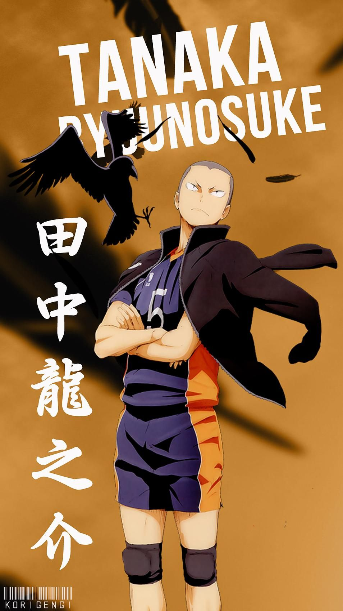

"Haikyuu!!" holds a special place in my heart because it beautifully captures the essence of teamwork, perseverance, and the pursuit of dreams. The story of Hinata and Kageyama, along with their teammates, resonates with me on a personal level as I see reflections of my own struggles and triumphs in their journey. The characters' growth, the intense matches, and the emotional highs and lows create a deep connection, making me feel like a part of their world. Every spike, every block, and every heartfelt moment remind me of the importance of dedication and camaraderie, making "Haikyuu!!" not just a show, but an inspiring and uplifting experience that stays with me long after the episodes end.
My Favourite Chracter in the series

Ryunosuke Tanaka is my favorite character from "Haikyuu!!" because of his fiery spirit, unwavering loyalty, and infectious energy. Tanaka's passionate dedication to the team and his role as a dependable wing spiker make him an invaluable asset on and off the court. His ability to uplift his teammates with his relentless enthusiasm and positive attitude, even in the face of adversity, is truly inspiring. Despite his tough exterior, Tanaka's moments of vulnerability and growth reveal a depth of character that resonates with me. His journey of overcoming self-doubt and striving to be the best version of himself mirrors my own experiences, making him a relatable and motivating figure. Tanaka's blend of strength, humor, and heart solidifies his place as my favorite character in the series.